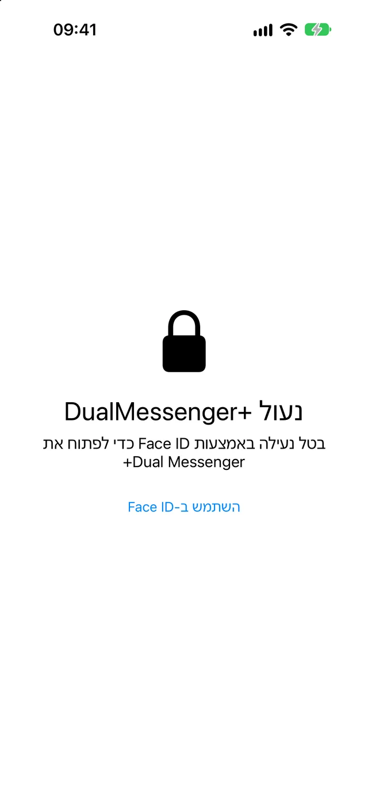
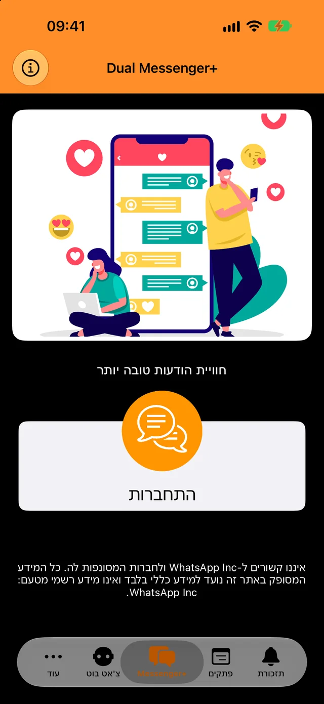
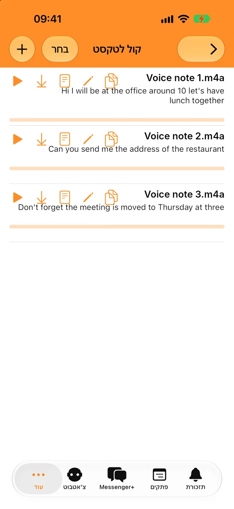
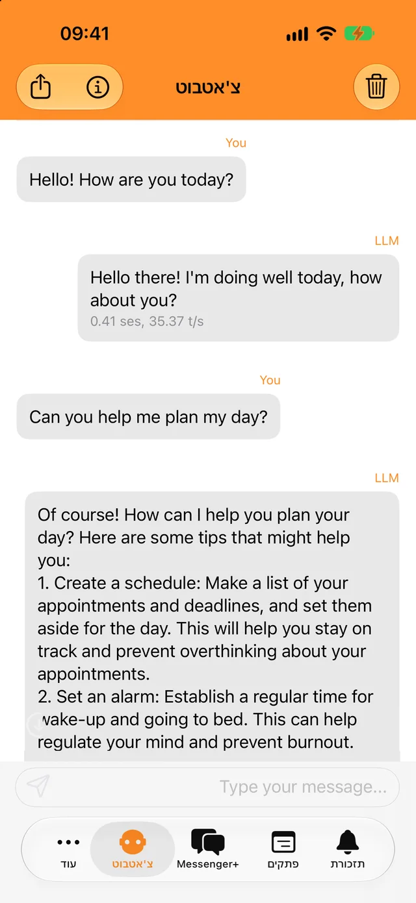
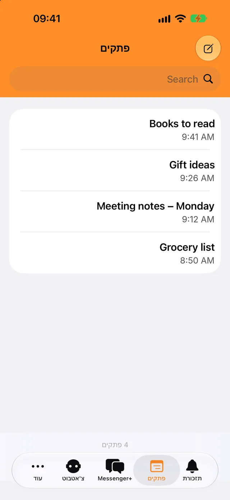

נעילה עם Face ID או קוד גישה
רק אתם יכולים לפתוח את האפליקציה ואת השיחות שלכם. בחרו אם היא תינעל מיד או אחרי כמה דקות.
הוסיפו את החשבון השני תוך שניות והפרידו בין שיחות העבודה לשיחות האישיות.
ההורדה בחינם. ל-iPhone, ל-iPad ול-iPhone Duo.

נעילה לשיחות שלכם וכמה כלים שימושיים ליומיום, הכול באותה אפליקציה.

רק אתם יכולים לפתוח את האפליקציה ואת השיחות שלכם. בחרו אם היא תינעל מיד או אחרי כמה דקות.

תמללו הודעות קוליות וקובצי שמע בשפה שלכם והעתיקו את הטקסט לכל מקום.

שאלו שאלות מהירות, גם בלי אינטרנט. השיחות שלכם עם הבוט לא יוצאות מהטלפון.

כתבו לעצמכם דברים, מצאו אותם בחיפוש וקבלו התראה כשמגיע זמן התזכורת.
תצטרכו את הטלפון שבו נמצא חשבון ה-WhatsApp השני שלכם, רק לרגע.
הקישו על ״התחברות״. על המסך יופיע קוד QR.
עברו אל ״הגדרות״, אחר כך אל ״מכשירים מקושרים״, והקישו על ״קישור מכשיר״.
כוונו את הטלפון הזה אל קוד ה-QR. השיחות שלכם ייפתחו ב-Dual Messenger+.
WhatsApp משאירה מכשיר מקושר מחובר כל עוד אתם משתמשים ב-WhatsApp בטלפון לפחות פעם ב-14 ימים.
ל-Dual Messenger+ אין שרתים שרואים את ההודעות שלכם. אין צורך ליצור חשבון, ובאפליקציה אין פרסומות או כלי מעקב.
פתקים, תזכורות, הקלטות ושיחות עם הבוט נשמרים ב-iPhone או ב-iPad שלכם.
אתם לא מוסרים לנו שם, כתובת אימייל או מספר טלפון.
Face ID ו-Touch ID מטופלים על ידי המכשיר שלכם. האפליקציה אף פעם לא מקבלת נתונים ביומטריים.